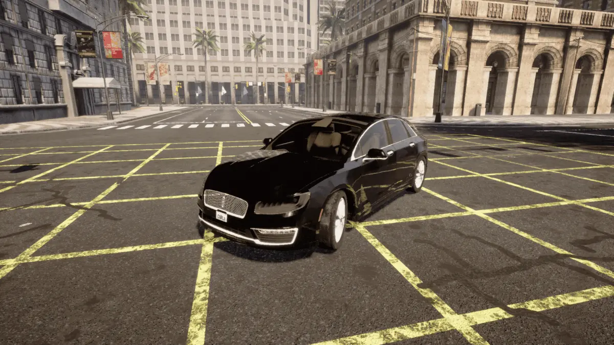
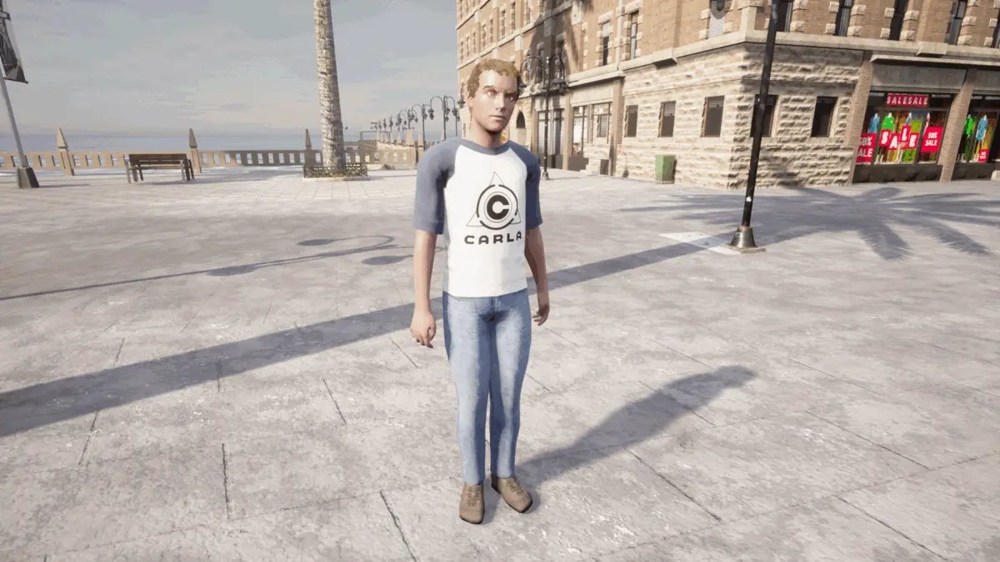
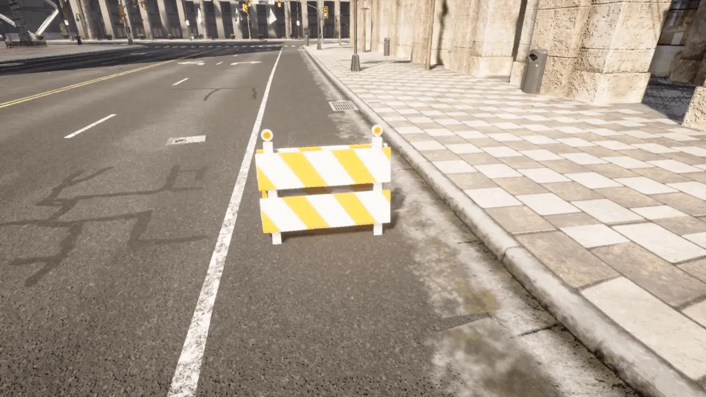

CARLA catalogue
The CARLA simulator provides a vast library of 3D assets to populate your autonomous agent's virtual environment. The 3D asset library provides numerous pre-built maps to choose from, a diverse array of vehicle models for traffic simulation along with models of pedestrians and other structures or obstacles that can be dynamically added to your simulation during runtime. This catalogue documents all of the 3D assets available to use in your simulations.
CARLA also provides numerous example Python scripts to help users understand the Python API. Information about the scripts is provided in the scripts catalogue:
Maps
The CARLA simulator provides 10 pre-built maps to choose from, providing a diverse array of environments for training and testing your autonomous agents.
| Town | Summary |
|---|---|
| Town01 | A small, simple town with a river and several bridges. |
| Town02 | A small simple town with a mixture of residential and commercial buildings. |
| Town03 | A larger, urban map with a roundabout and large junctions. |
| Town04 | A small town embedded in the mountains with a special "figure of 8" infinite highway. |
| Town05 | Squared-grid town with cross junctions and a bridge. It has multiple lanes per direction. Useful to perform lane changes. |
| Town06 | Long many lane highways with many highway entrances and exits. It also has a Michigan left. |
| Town07 | A rural environment with narrow roads, corn, barns and hardly any traffic lights. |
| Town08 | Secret "unseen" town used for the Leaderboard challenge |
| Town09 | Secret "unseen" town used for the Leaderboard challenge |
| Town10 | A downtown urban environment with skyscrapers, residential buildings and an ocean promenade. |
| Town11 | A Large Map that is undecorated. Serves as a proof of concept for the Large Maps feature. |
| Town12 | A Large Map with numerous different regions, including high-rise, residential and rural environments. |
| Town13 | A Large Map similar in scale to Town 12, but with distinct features. |
| Town15 | A map based on the road layout of the Autonomous University of Barcelona. |
Vehicles
CARLA provides a diverse array of vehicles, with high fidelity models of real world cars, trucks and bikes, for replicating traffic in your simulations. Browse and choose the vehicles you like in the vehicle catalogue.

Pedestrians
CARLA's asset library includes a variety of pedestrians to simulate foot traffic in the 3D environments surrounding your agent. Browse and choose the pedestrians you want in the pedestrian catalogue.

Props
CARLA's props model the various structures and items you might find on or near roads, such as kiosks, statues, benches, boxes, bins, debris or trash. The props can be placed anywhere in your simulation dynamically during runtime. Browse and choose your props in the props catalogue.
